Вход и пять работ
Сохранены масштабный заголовок, все пять быстрых входов до биографии и настоящий human approval. На Home рамки и UI видимы вместе; в кейсе сохраняются смысловые interlock и checkpoint.
H6 · весь Hero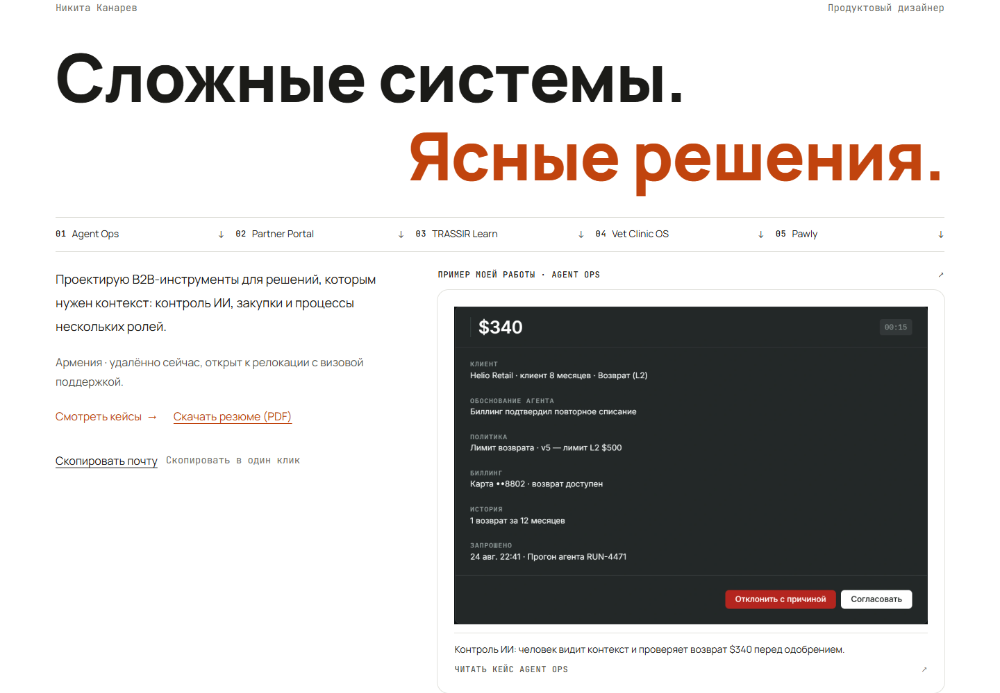
Partner Portal · весь системный лист
H5 · прежняя композиция · целый контейнер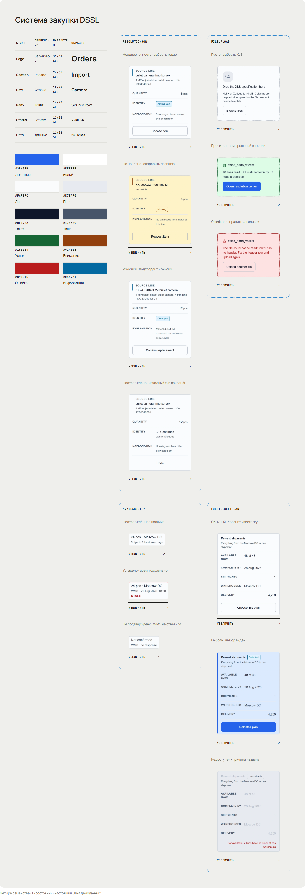
H6 · сравнительные семейства и компактная foundation · целый контейнер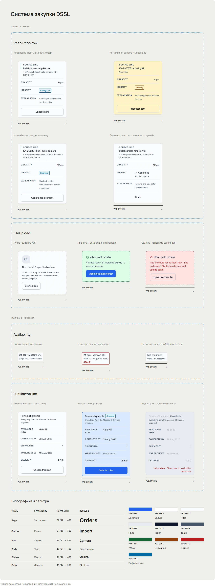
TRASSIR Learn · весь системный лист
H5 · прежняя композиция · целый контейнер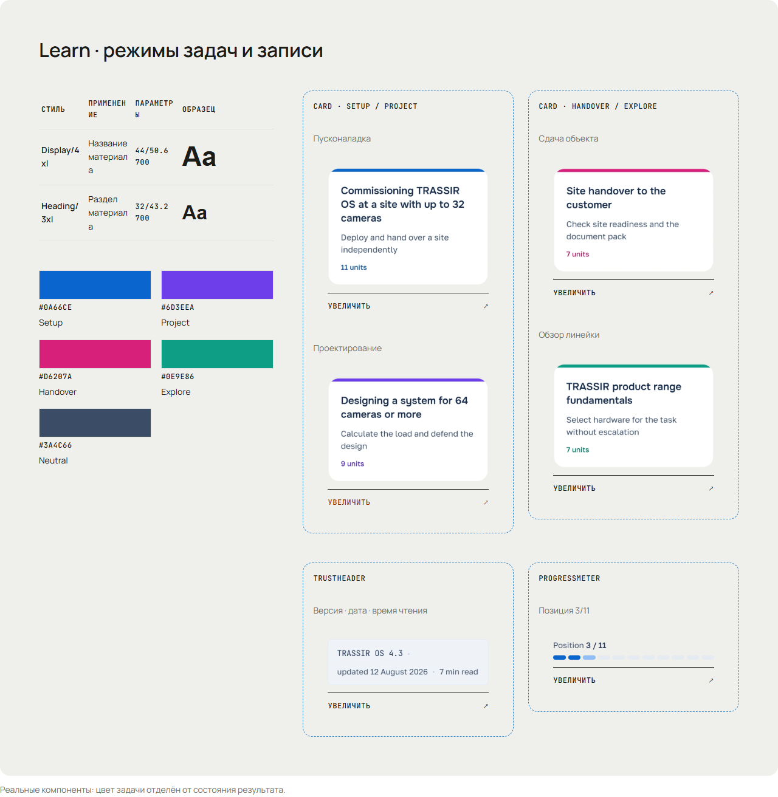
H6 · сравнительные семейства и компактная foundation · целый контейнер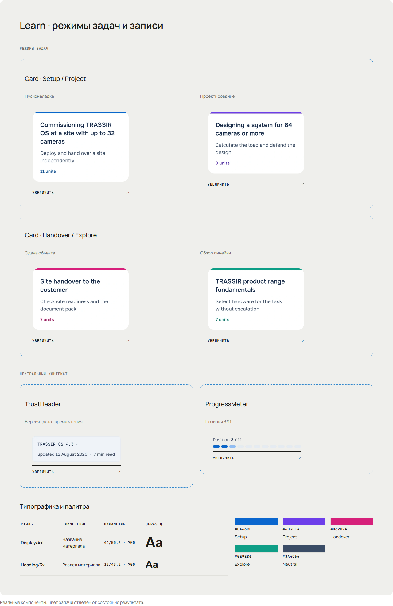
Pawly · весь системный лист
H5 · прежняя композиция · целый контейнер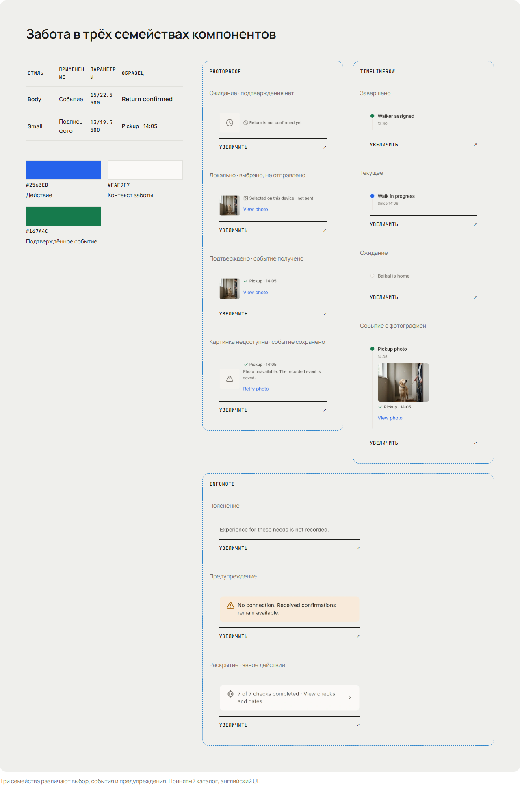
H6 · сравнительные семейства и компактная foundation · целый контейнер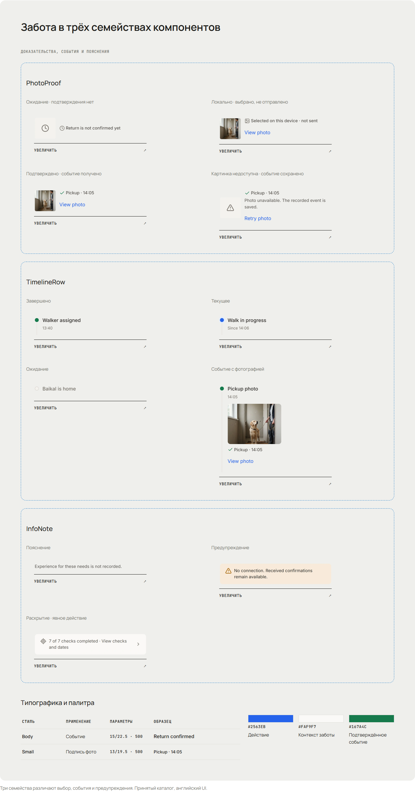
Agent Ops · готовый native материал
H6 · целая композиция с полями и подписьюPartner Portal · готовый native материал
H6 · целая композиция с полями и подписью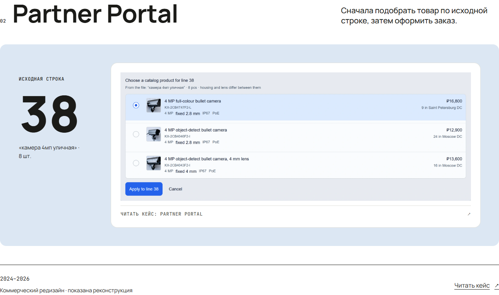
TRASSIR Learn · готовый native материал
H6 · целая композиция с полями и подписью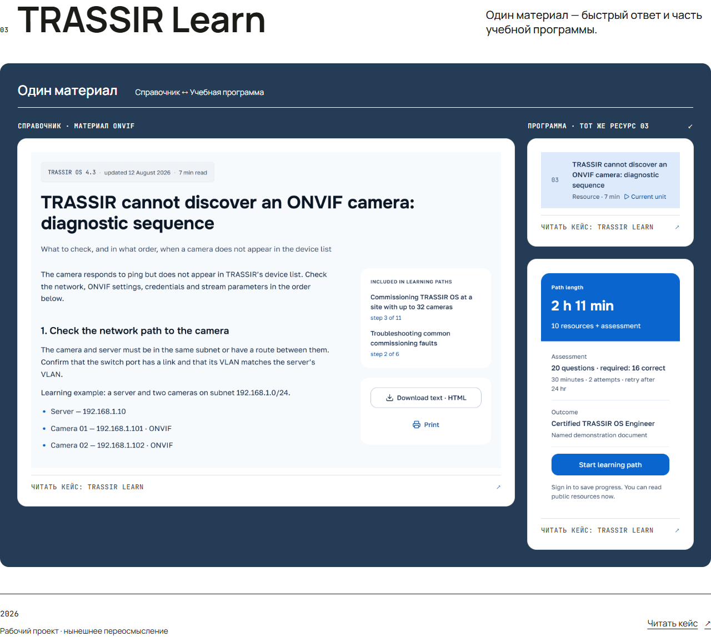
Vet Clinic OS · готовый native материал
H6 · целая композиция с полями и подписью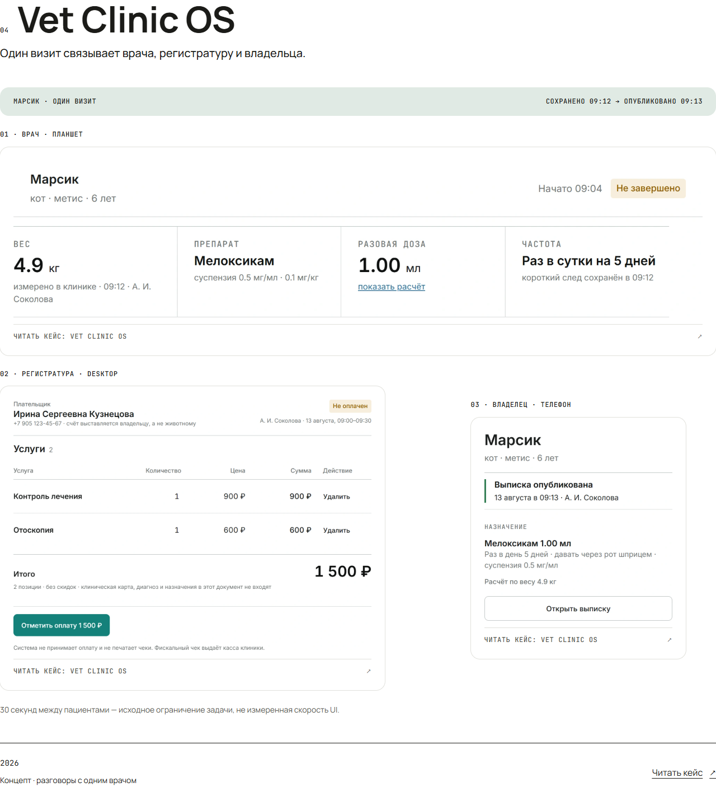
Pawly · готовый native материал
H6 · целая композиция с полями и подписью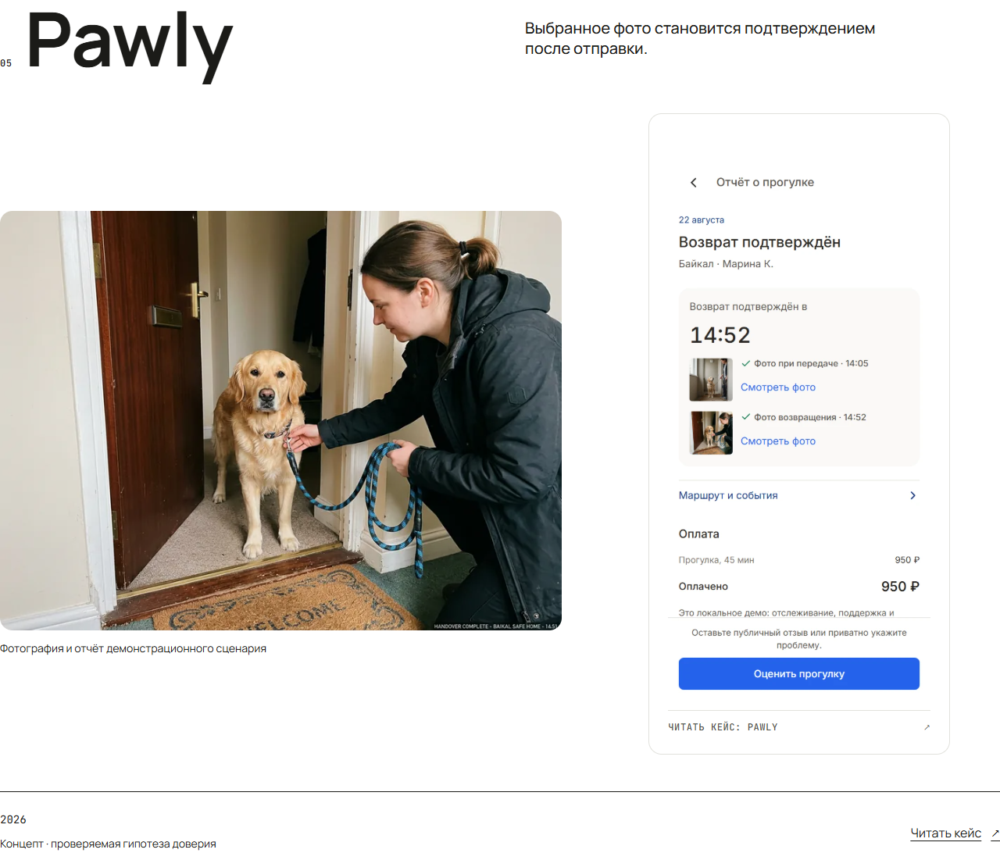
Agent Ops · причина замечания и новый материал
Слева исходный viewport фильма H5 на 2.23s. Справа целый контейнер H6; это разные виды фиксации, а не один таймкод. Первое появление проверяется в новом native фильме ниже.
Vet Clinic OS · причина замечания и новый материал
Слева исходный viewport фильма H5 на 6.74s. Справа целый контейнер H6; это разные виды фиксации, а не один таймкод. Первое появление проверяется в новом native фильме ниже.
Pawly · причина замечания и новый материал
Слева исходный viewport фильма H5 на 8.49s. Справа целый контейнер H6; это разные виды фиксации, а не один таймкод. Первое появление проверяется в новом native фильме ниже.
Выбранная страница целиком · H5 / H6
Текущее native движение
24 новые записи: Home и пять историй × EN/RU × 1440/390. Чтение, system families, programme disclosure, Next/Back, обратная прокрутка. Метки являются wall-clock ориентирами. Дополнительно четыре записи быстрых входов Home и fast/reverse.
H6 · выбранная страницаH6 · контактный лист · полные viewport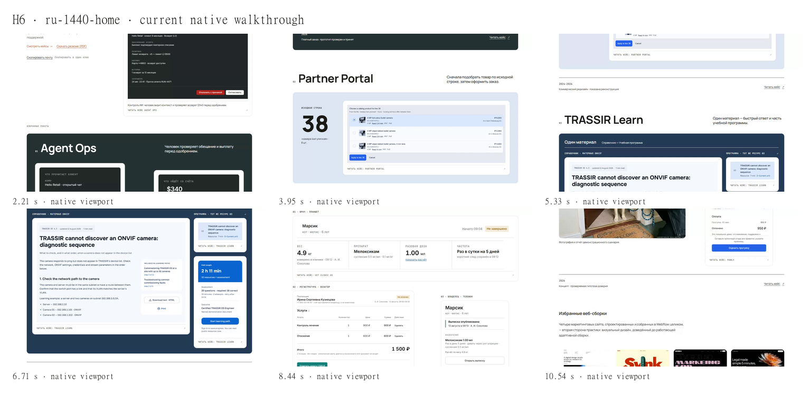
H6 · быстрые входы Home · выбранные язык и ширина